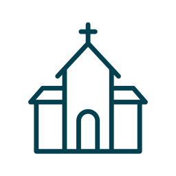

assets/photo.jpg
“And let us consider how to stir up one another to love and good works, not neglecting to meet together, as is the habit of some, but encouraging one another, and all the more as you see the Day drawing near.”
Hbr. 10:24-25, ESV
Brothers and sisters in Christ,
The words of Paul remind us of the importance of regular gathering within the Church. As Paul was encouraged by the faith of the Ephesians and the Philippians, we ought to be encouraged by the faith of one another. This truth is especially poignant today, now that many young adults are leaving Confessional Lutheranism in search of community and fellowship in church bodies that have more young adults than we do.
This is why this group has been organized: to serve Confessional Lutherans who desire real connection with the members of their synod. Please prayerfully consider taking part in the growth of the bond of fellowship shared by Lutherans in central Ohio.
In Christ,Lutheran Young Adults